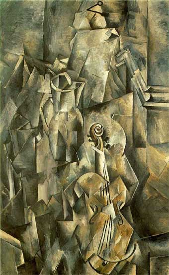

Le Petit Louvre
Art Gallery///Galeria De Arte
Georges Braque
Fecha de nacimiento : 13 de mayo de 1882
Lugar de nacimiento : Argenteuil-sur-Seine, cerca de París, Francia
Fecha de muerte : 31 de agosto de 1963 (81 años)
Pintor francés. Hijo de un pintor de brocha gorda, oficio que siguió en un
principio, Georges Braque estudió a partir de 1900 en la Escuela de Bellas Artes de París y hacia 1906 se adhirió al
fauvismo, bajo la influencia de su amigo Othon Friezs, con obras como El embarcadero del puerto de l'Estaque.

